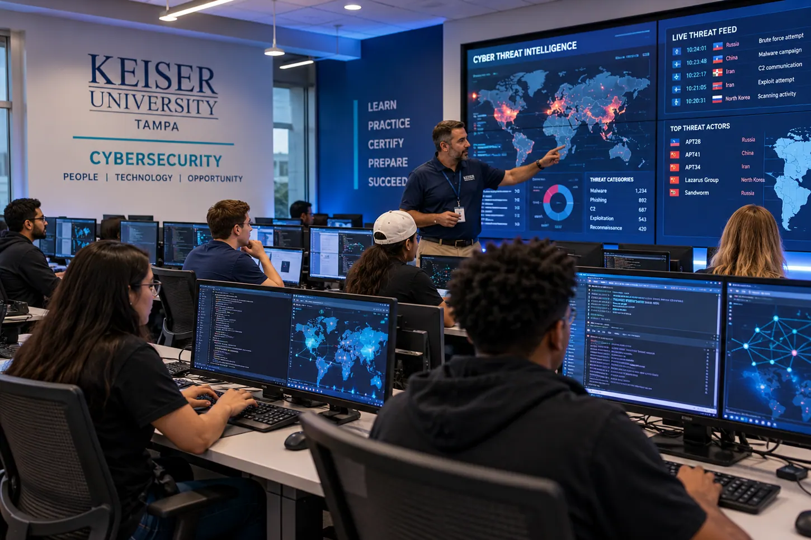

CyberSeekEXTERNAL RESOURCE ↗
A clearer view of
your career possibilities.
Explore cybersecurity career pathways, requested skills, and credentials. Bring what you discover back to your advising conversation.
Connect what you are learning with where you want to go. Explore career pathways, find your KU resources, and bring a clearer question to your next advising conversation.

Planning prompts and advising preparation maintained by Prof. Dragassakis.
Prepare for advising ↗Program details, catalogs, and student systems published and managed by the university.
Find KU program information ↗Career pathways and workforce tools maintained independently by CyberSeek.
Explore career resources ↗Use CyberSeek's interactive career and workforce tools to ask better questions about your direction.
CyberSeekEXTERNAL RESOURCE ↗
Explore cybersecurity career pathways, requested skills, and credentials. Bring what you discover back to your advising conversation.
Source: CyberSeek. Tools open on CyberSeek; figures and reporting periods are maintained there. No live labor-market data is reproduced here. No partnership or endorsement is implied.
Explore security analysis, incident response, and digital forensics.
Investigate roles on CyberSeek ↗Pick a role on CyberSeek. Identify two recurring skills and bring one project idea to your adviser.
Adviser-created exploration prompts. These are not official CyberSeek role mappings or guarantees of employment.
Your daily tools, academic resources, and support channels, linked directly to their official homes.
Course materials, assignments, and your learning environment.
Student recordsSchedules, account information, and university student services.
CommunicationOpen the official Microsoft sign-in for your student email.
Academic planningReview official academic requirements and university policies.
ResearchFind research databases, library guides, and learning resources.
Academic supportFind help with academic writing and the writing process.
Student supportExplore university support and career development resources.
Financial supportUse the official university channel for funding questions.
CampusFind campus information, programs, and contact details.
Use KU's official program and catalog information to inform your discussion. Confirm your individual degree plan with your adviser.
KU lists the Cybersecurity BS at Tampa. Explore the curriculum and current requirements on the university's official program page.
View the official Cybersecurity BS ↗Explore governance, privacy, risk, compliance, and secure development.
Explore forensics, ethical hacking, network defense, and countermeasures.
Program source: KU Cybersecurity BS · Official academic catalogs ↗
Whether you're exploring careers or working through a challenge, a little preparation helps turn a check-in into a useful plan.
Private to this visit. Checklist selections are not saved or submitted.
A planned, optional texting service for advising check-ins and follow-up questions. AI may assist with drafts; the initial workflow includes adviser review before sending.
Registration and service setup remain unresolved. The policy documents are drafts. No live SMS enrollment is available here.
Choose a role on CyberSeek, note the skills that interest you, and explore the Workforce Map. Bring one finding and one question to your adviser. The tools run on CyberSeek's website.
Refer to KU's official program page and catalog. Your adviser or registrar can confirm your individual degree plan and course availability.
Not yet. The service is in preparation. Any future participation will require documented explicit consent.